Expensive restaurant in Kyoto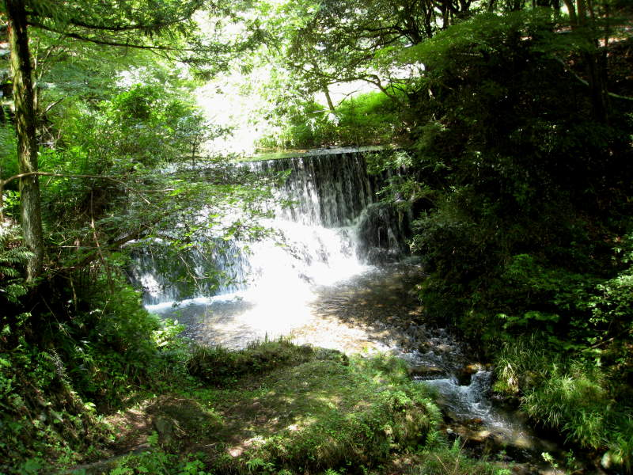
The
restaurant we were going to in Kyoto had three main themes. The
first theme was waterfalls. The dining area was on a platform
over a cascading waterfall. This was one of the waterfalls along
the river, but the waterfall we were at was not nearly as high.
Too bad, in retrospect, because the mist would have felt very
good. The second theme was the food. As you will see, it is
a thoroughly Japanese meal, with foods that I've never seen before.
Perhaps I have not been watching Iron Chef enough. The
third theme was the yukatas. If you pay more, they let you choose
a yukata to keep, which you can wear while dining.
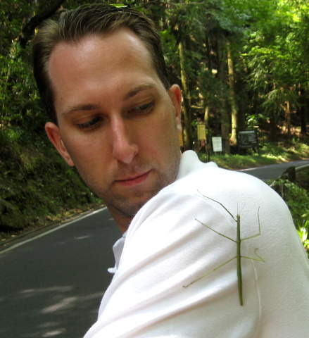
A 5-legged stick bug mounts an assault on Paul.
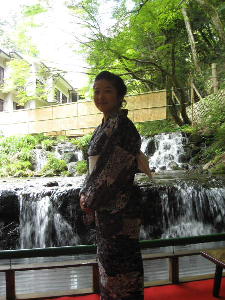
Chiemi,
posing for me this time! Meanwhile, I was experimenting with the
shutter speed, to make the waterfall look good too.
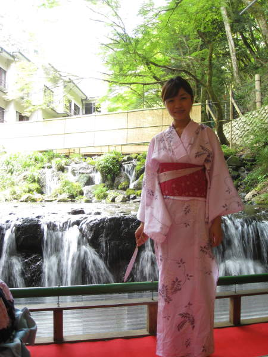
Chiemi's friend in her yukata.
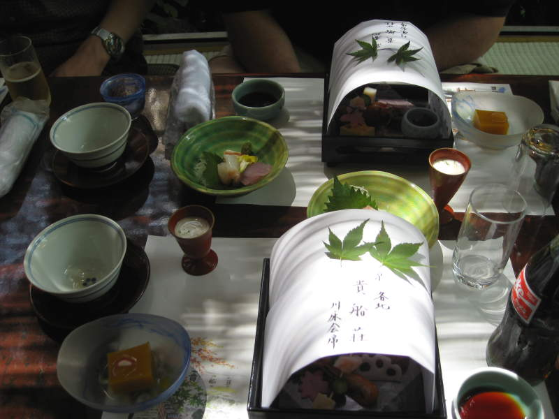
Here's
the initial assortment of food they laid out for us. The bottle
of Coke seems out of place. Anyway, I liked the square thing in
the lower left. It was pumpkin tofu. Very subtle flavor
that you'll only taste if someone tells you it's pumpkin tofu.
Pumpkin has a very subtle flavor. I tried making beer with
pumpkin once. A lot of it. I didn't taste the pumpkin much
at all. The trick is to use pumpkin pie spices instead.
Maybe I would have enjoyed pumpkin pie spice tofu more, but Japan
was about everything being simple and delicate.
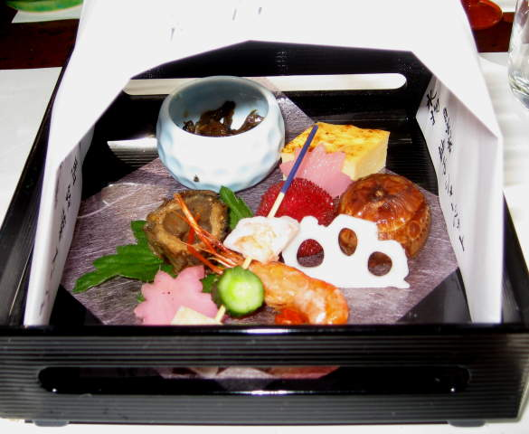
Here's a better view of the crazy food I was eating. It was all good though.
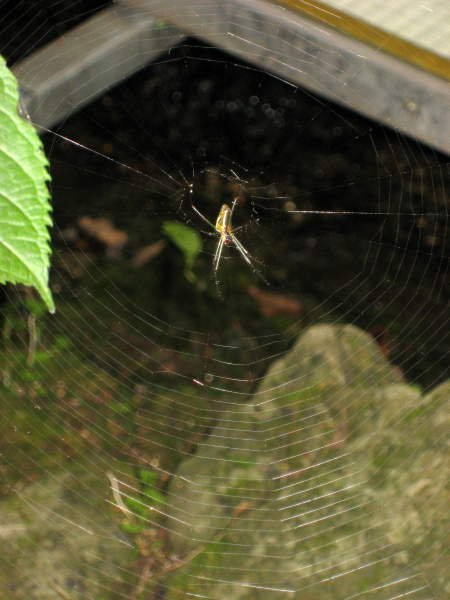
Next to our table, I saw this spider on a web.
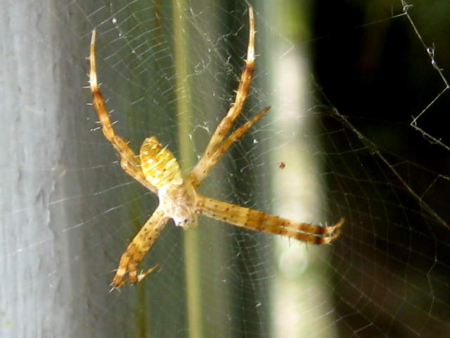
Good time for the camera zoom. If you look closely, it seems like there's a little face on the spider.
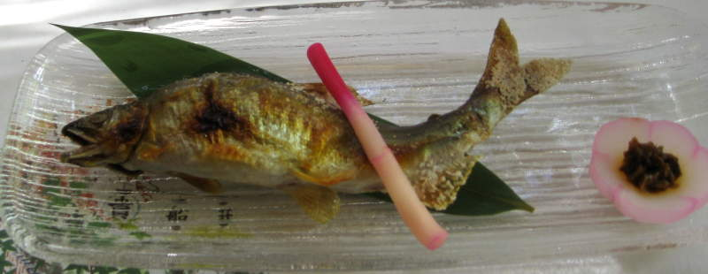
This
was the star of the evening. It was crunchy and crispy. I
saw this and gulped, realizing I was going to feel the fish face in my
mouth. I grabbed the thing, held my breath, and chomped the head
off quickly, chewing as fast as I could. I could feel everything
on my tongue, especially the jaw bone. It was so awful! The
rest of the fish was good though. Nice and salty.
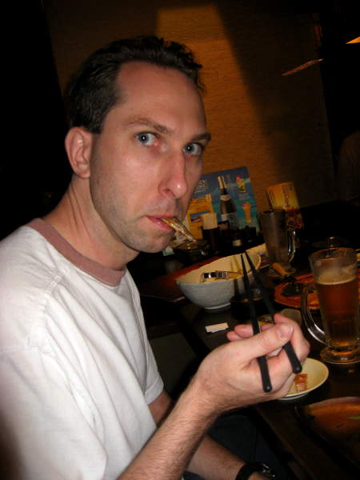
Paul ate the fish too. He said the jawbone got stuck in his teeth.
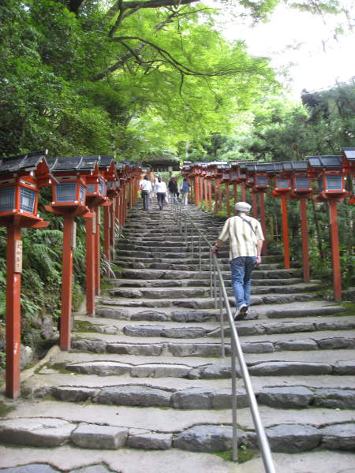
Near
the restaurant there was a shrine we went to visit. After Mt.
Fuji, like every other physical challenge I'll ever encounter, this was
nothing.
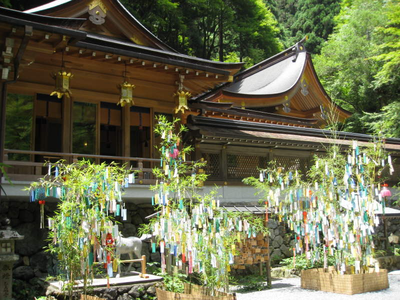
How
this Shinto tradition works is as follows. You buy a fortune on a
tightly wrapped slip of paper. If it's good, you can make another
contribution if you wish or just run away happy. If it's bad, you
can tie it to one of those poor trees, with the hopes that the gods
will "take it back".
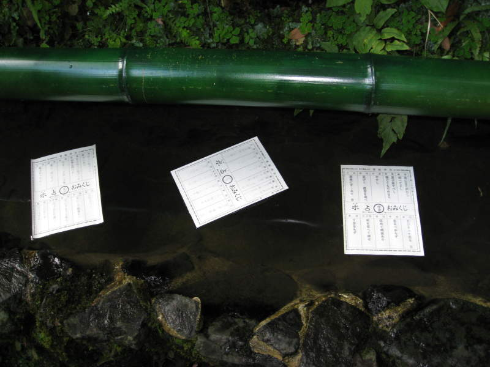
Here's
a fortune I decided to buy. You buy a blank sheet of paper, put
it in the icy water, and then wait for the symbols to appear.
Fortunately, I had people to translate. Most of it was
good. Each of the ten columns is a different fortune. The
one that hit home the most was along the lines of "A move northeast
will bring you good fortune." My home, at the time, was in New
Jersey. Just before this trip, I had accepted a new job in
Boston, to the northeast. If it was any other direction, I would
have shrugged it off as silly, but nope, I'm convinced. Shinto is
the best religion. Another column that I did not appreciate said
"Beware of accidents". Leading up to this dinner, I had hit my
head over forty times due to the low doorways being just high enough
for me not to see them. Just before dinner, I hit my head going
to the bathroom, and the walls had this stucco texture, so it actually
drew blood. I cleaned up as best I could during dinner.
During dinner, I spilled some soup all over the table. This
fortune came WAY too late.
Back